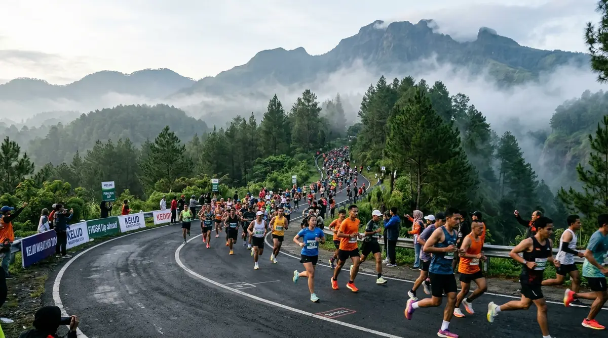

Daftar Isi Artikel
- Fakta Utama Kelud Vertical Challenge 2026
- Kategori, Jam Start, dan Biaya Pendaftaran
- Jadwal Hari-H dan Pengambilan Race Pack
- Rute dan Medan Menuju Kawah Gunung Kelud
- Fasilitas yang Diperoleh Peserta
- Persiapan Fisik dan Perlengkapan Lari Menanjak
- Akses, Penginapan, dan Info untuk Pendamping
- Pertanyaan yang Sering Diajukan (FAQ)
Kediri Event — Kelud Vertical Challenge 2026 digelar Minggu, 1 November 2026 di Gerbang Wisata Gunung Kelud, Kabupaten Kediri, dengan dua kategori yaitu 20K Trail Run (Rp475.000, start 04.00 WIB) dan 10K Road Run (Rp350.000, start 06.00 WIB), dibatasi 750 peserta dengan tema Conquer The Crater.
Ringkasan Inti Kelud Vertical Challenge 2026:
- Finis di Puncak Kawah: Event berlangsung Minggu, 1 November 2026, dengan finis di ketinggian sekitar 1.731 mdpl di kawasan kawah Gunung Kelud.
- Dua Pilihan Kategori: Tersedia kategori 10K Road Run (jalan aspal) dan 20K Trail Run (jalur tanah dan batuan) dengan biaya berbeda.
- Lokasi Race Pack: Pengambilan paket lomba dijadwalkan pada 31 Oktober 2026 di Convention Hall Simpang Lima Gumul.
- Batas Kuota Eksklusif: Kuota peserta dibatasi hanya 750 orang demi kenyamanan dan keselamatan jalur tanjakan.
- Agenda Sport Tourism Resmi: Diselenggarakan oleh Ourace Management dan tercatat dalam kalender pariwisata Pemkab Kediri.
Fakta Utama Kelud Vertical Challenge 2026
Tanggal, lokasi, kategori, biaya, kuota, dan penyelenggara adalah enam fakta utama Kelud Vertical Challenge 2026 yang tercatat di situs resmi event.
| Komponen | Informasi Resmi |
|---|---|
| Tanggal Lomba | Minggu, 1 November 2026 |
| Lokasi Start | Gerbang Wisata Gunung Kelud, Kabupaten Kediri |
| Tema Acara | Conquer The Crater |
| Kategori Lomba | 10K Road Run dan 20K Trail Run |
| Batas Kuota | 750 peserta |
| Penyelenggara | Ourace Management & Pemkab Kediri |
Informasi lengkap dan pendaftaran dikelola panitia melalui situs resmi keludvertical.com, sehingga cek situs tersebut untuk ketersediaan slot terbaru.
Kategori, Jam Start, dan Biaya Pendaftaran
Kategori 20K Trail Run dimulai pukul 04.00 WIB dengan biaya Rp475.000, sedangkan kategori 10K Road Run dimulai pukul 06.00 WIB dengan biaya Rp350.000.
- 20K Trail Run (Rp475.000): Cocok bagi pelari yang sudah terbiasa dengan medan trail, jalur tanah berbatu, dan jarak tempuh jauh dengan elevasi ekstrem.
- 10K Road Run (Rp350.000): Menjadi pilihan tepat bagi pelari yang ingin merasakan sensasi tanjakan kawah beraspal mulus dengan jarak yang lebih bersahabat.
- Jam Start Dini Hari: Start pukul 04.00 WIB pada kategori 20K berarti peserta perlu menyiapkan perjalanan sejak malam sebelumnya.
Biaya di atas merupakan harga yang tercantum pada situs resmi saat artikel ini ditulis, dan dapat berubah mengikuti kebijakan panitia atau ketersediaan kuota.
Jadwal Hari-H dan Pengambilan Race Pack
Pengambilan race pack pada 31 Oktober 2026 di Convention Hall Simpang Lima Gumul, disusul start lomba pada 1 November 2026 pukul 04.00 WIB untuk 20K dan pukul 06.00 WIB untuk 10K, adalah dua tahap utama jadwal peserta.
- Sabtu, 31 Oktober 2026: Pengambilan paket lomba (race pack collection) di Convention Hall Simpang Lima Gumul (SLG), Kabupaten Kediri.
- Minggu, 1 November 2026, 04.00 WIB: Start kategori 20K Trail Run di Gerbang Wisata Gunung Kelud.
- Minggu, 1 November 2026, 06.00 WIB: Start kategori 10K Road Run di Gerbang Wisata Gunung Kelud.
Bawa bukti pendaftaran dan kartu identitas saat mengambil race pack, mengikuti ketentuan resmi yang ditetapkan oleh panitia penyelenggara.
Rute dan Medan Menuju Kawah Gunung Kelud
Rute Kelud Vertical Challenge menanjak dari Gerbang Wisata Gunung Kelud menuju area kawah di ketinggian sekitar 1.731 mdpl dengan kombinasi jalan aspal dan trek, dan peserta 10K pada edisi sebelumnya melewati terowongan menuju kawah sebelum finis.

Trek aspal menanjak di lereng Gunung Kelud yang dikelilingi hutan pinus asri dan kabut pegunungan.
Edisi 2025 mencatat perpaduan rute road dan sedikit trail dengan elevasi 715 meter pada kategori 10K. Edisi lalu menetapkan batas waktu (cut off time) 3,5 jam untuk 10K, sedangkan batas waktu edisi 2026 perlu dipastikan kembali melalui panduan teknis resmi. Pemandangan tebing kawah dan puncak di sekitar garis finis menjadi daya tarik utama bagi para pelari.
Fasilitas yang Diperoleh Peserta
Baju lari eksklusif, medali finisher logam, dan transportasi shuttle menuju titik kumpul adalah tiga fasilitas peserta yang tercantum pada informasi event 2026.
- Perlengkapan Lomba: Jersey lari eksklusif, nomor dada (BIB) ber-timing chip, dan goodie bag peserta.
- Apresiasi Penamat: Medali finisher bagi pelari yang menyelesaikan rute dalam batas waktu resmi.
- Dukungan Jalur: Water station hidrasi dan buah, tim medis ambulans darurat, asuransi, serta ojek shuttle menuju area parkir.
Persiapan Fisik dan Perlengkapan Lari Menanjak
Latihan tanjakan, sepatu yang sesuai dengan medan, pakaian lapis untuk suhu dingin dini hari, dan strategi pace bertahap adalah empat persiapan penting untuk Kelud Vertical Challenge.
- Latihan Tanjakan: Melatih kekuatan otot kaki dan pernapasan untuk elevasi yang terus naik tanpa turunan panjang.
- Sepatu Khusus Medan: Sepatu lari trail dengan grip sol yang kuat menjaga traksi di batuan kerikil dan pasir vulkanik.
- Pakaian Berlapis: Pakaian lapis seperti windbreaker membantu menghadapi udara dingin pegunungan saat start dini hari.
- Pace Bertahap: Menjaga kecepatan stabil mencegah kehabisan tenaga sebelum tanjakan terakhir menuju bibir kawah.
Tips ini bersifat umum dan bukan nasihat medis; selalu konsultasikan kondisi kesehatan Anda kepada dokter sebelum mengikuti lomba berintensitas berat.
Akses, Penginapan, dan Info untuk Pendamping
Gunung Kelud berada di Kecamatan Ngancar, Kabupaten Kediri, dengan titik pengambilan race pack di Simpang Lima Gumul, sehingga peserta luar kota sebaiknya menginap di sekitar SLG atau Kota Kediri sehari sebelumnya.
- Menginap H-1: Menginap sehari sebelumnya membantu peserta mengambil race pack dengan santai dan beristirahat cukup sebelum start dini hari.
- Aktivitas Pendamping: Pendamping dan penonton dapat menikmati kawasan wisata Gunung Kelud dan agrowisata nanas setelah sesi lomba selesai.
- Patuhi Regulasi Kawasan: Cek kondisi cuaca dan informasi pos pantau vulkanologi sebelum berangkat karena Kelud merupakan gunung berapi aktif.
Pertanyaan yang Sering Diajukan (FAQ)

Ditulis oleh: Erlang Sinatrya Putra Yusya
Event Content Specialist & EditorSpesialis liputan ajang lari jalan raya, trail running, dan kejuaraan olahraga di Kediri Event. Menyajikan informasi rute, elevasi, dan panduan teknis yang bermanfaat bagi komunitas pelari se-Jawa Timur.
Profil Kediri Event